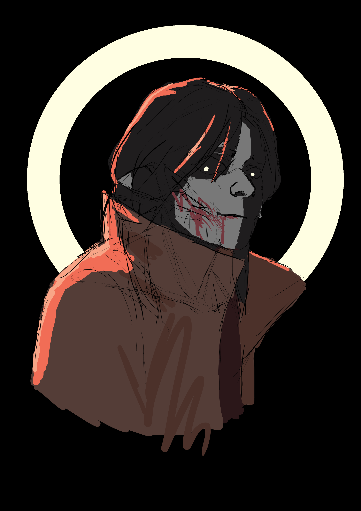

This one has some things to unpack. First and formost, it's a fanart of 'not Mauve' from a recent favorite game of mine, 1000xResist that utilizes a voxel based fluid sim and some cool post processing. The actual character model is my personal pincushion for my 3d experiments, but the design of their prostetics took inspiration from Mauve, so I felt properly honoring the character would be fitting.
The geometry and textures for the gear were aquired from my own gpu using Nvidia Nsight Graphics.
I converted the .csv geometry files to .obj files using an online conversion page that I built onto my site for class, with the long term intent to make a tool that I could use to harvest game assets for cosplay projects. The logic is written with php and filters packages into a mySQL database where I can pull the processed files at any time. It isn't on the public facing version, just because github.io doesn't allow SQL and I'm not ready to be paying for a domain.
A sphinx is defined by predation and wisdom. I identify with it, or I feel that I know what it is, you know? On an island (distant but present; right in front of you, right now) there is an animal that eats people who can't recontextualize their past experiences.
I felt sick, like drinking stale water. In need of something clean in a deeply flawed algorithm's desert of malformed contagions. This one was from scratch, the sculpting, texturing, and lighting.
A fanart of a character, Qingtao from Limbus Company. Iconic scemeing advisor. Sculpt and overpainted baked shading.
My first sculpt outside of class: a fun opportunity to play with post processing
Fun non-photorealistic rendering in recreating the 'nyx' or nebula effect featured in Tyler Jakobson's illustration of Nightmare Shepard as a versitile material addon.
Facial motion capture using Apple ARkit and Unreal Engine's Link Live for Metahuman. Blendshapes are a pain to manually set up. Practice with voronoi. Experimating with some steps in making film ready characters.
Written in OpenGL, ported to Blender: Bezier curves functioning as a rig for infinite precision per vertex and far less data required than a conventional bone rig.
SDFs with procedual materials, SDFs converted into voxel meshes.
Another SDF, but surreal and animated.

You like blood too?
Working on molecular Fluid Sim
OpenGL; Lightning, modeled by using dijkstra's algorithm on a lattice that samples a noise function to capture how a min cost path is found through a potential field... and post processing for flavor, I can't help it I love adding effects too much.
A two person project to isolate and track cyclones from wind data. I was responsible for the vector visualization (so coloful) and an algorithm to find robust points (red) from the blue selection. This was an implomentation of the paper *Trophy: A topologically robust physics-informed tracking framework for tropical cyclones* featured in the IEEE Journals Magazine https://ieeexplore.ieee.org/document/10309869/ Following the paper's lead, we used the climate data store's hourly pressure levels for our datasets. https://cds.climate.copernicus.eu/datasets/reanalysis-era5-pressure-levels?tab=overview
Working in Paraview to remesh using the morse-smale complex.
A physically based iridecence (thin film interferance) shader. Unlike most materials that I looked at for referance I sampled photon wavelengths rather than using a hueshift function to get correct coloration.
Somthing else I wanted to note is that despite the white light, the first image appears rather dark. This is because at that thickness it functions as an antirefective film. I accedientally came across the effect and thought it was cool.
Texas Holdem, built in Qt using C as part of a seven person project for my Software Development course. I was responsible for using Qt to design a dynamic layout for our visuals and integrate it with the our datastructure for the gameState.
.png "Wings that follow a will of their own")